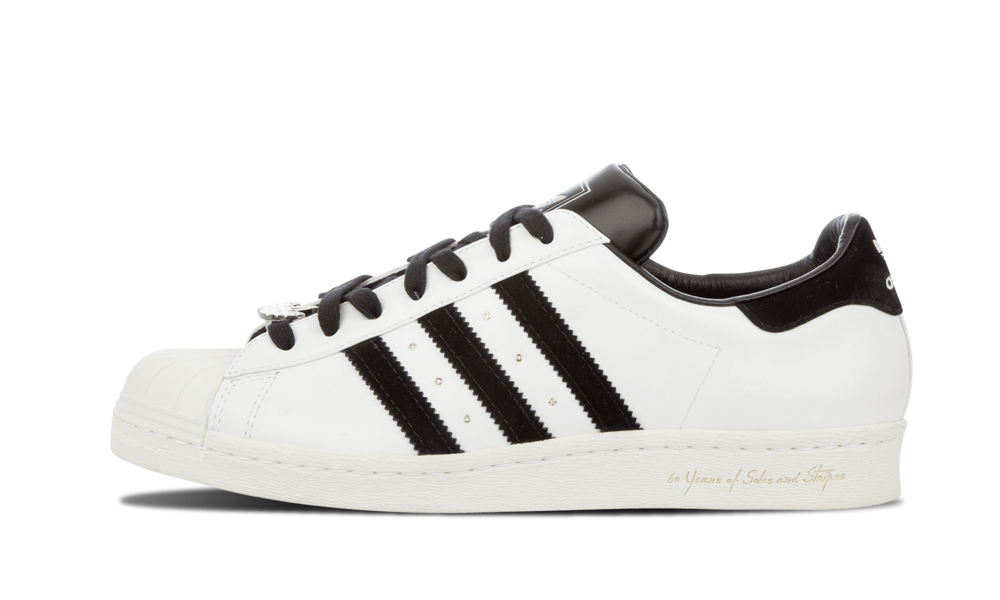

Adidas
Adidas ha sido una marca clave en la evolución del calzado urbano. Desde sus orígenes deportivos hasta su presencia en la cultura pop, ha sabido conectar con distintas generaciones gracias a su innovación y estilo.
En la actualidad, Adidas destaca por sus colaboraciones con artistas como Bad Bunny y sus diseños icónicos como los Superstar, que combinan herencia y modernidad, haciendo parte esencial de la moda urbana.
Yeezy Boost: Diseñadas en colaboración con Kanye West, estas zapatillas redefinieron la estética del calzado urbano con su diseño futurista, materiales premium y suela ultra cómoda.
Superstar: Un clásico que trascendió del baloncesto a la cultura hip-hop. Sus tres franjas y puntera de concha son símbolo de autenticidad y estilo desde los años 70.
Forum Buckle Low x Bad Bunny: Esta colaboración refleja la identidad de Bad Bunny: libre, irreverente y urbana. Su diseño robusto y detalles únicos capturan la esencia del artista.